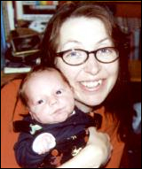

Introduksjon ved Ingar Knudtsen
Hva kan en far si om sin egen datter? Utenom å fortelle verden hvor fantastisk hun er? Snill, vakker, intelligent, flink. OK, det er sjølsagt myrsnipefaktoren igjen, den som Vanja sjøl skriver om i denne gjesteartikkelen. Så la meg moderere litt, for skams skyld. Temperamentsfull, rotete, impulsiv, svær til å bløffe… Nåja, det siste dreier seg vel om begivenheter som inntraff for lenge, lenge siden, da hun laget uskyldige små historier for å dekke over hvor hun hadde vært og med hvem!
Men det var greit. Hennes historier var slett ikke verre enn mine fra den gangen da jeg var i en tilsvarende situasjon og alder…
Vanja ble forresten politikeren i familien. Og hennes (tidligere) medlemskap i SV har muligens skylda for at så mange tror at også jeg har ei fortid i samme parti. Noe som herved kategorisk og bestemt avsannes!
Vi er enige om mange ting, Vanja og jeg, men det er også masse ting vi kan krangle så busta fyker om – ikke en kjedelig stund i våre familiesammenkomster, nei!
Hun har sittet flere perioder i bystyret i Kristiansund og har vært landsstyremedlem i SU. Flittig deltager i adskillige debatter, osv. osv. Til hun brøt med partiet og valgte å engasjere seg i partiet De Grønne i stedet.
Hun toppet listen til De Grønne i Møre og Romsdal ved siste stortingsvalg.
Men akkurat nå er det de altså nære ting som opptar henne mest… Riktignok er det nå et par-tre uker siden hun skrev denne artikkelen, og hun spurte om hun kanskje ikke skulle skrive en ny, både lokale og globale begivenheter tatt i betraktning. Men jeg liker denne, og når skulle hun forresten få tid?
Glad for at du ville skrive på sida mi, Vanja!
La humla suse
For ei god stund siden inviterte pappa meg til å skrive en snutt på sida hans. Jeg skulle skrive om det som opptok meg for tiden sa han. I det ene øyeblikket ønsket jeg å skrive en flammende politisk appell om Norge og oljemilliardene, privatisering av Statoil og konkurranseutsetting. I neste sekund skulle jeg skrive om min helt fantastisk nydelige baby, eller bare om det å være mor. I stedet blir det et sammensurium av alle de emnene som har gått og surret i hodet den siste tida.

Ja jeg har hatt masse tid til å se TV, lese aviser, tenke og ikke minst føle. Men armene mine ligner mer og mer en bavians. Alt jeg gjør for tiden foregår med ei arm. I den andre bærer jeg en tre måneder gammel baby. Jeg er som det så pent heter bundet til hjemmet på hender og føtter. Det verste er at jeg liker det, så lenge det er for en periode.
|Akkurat nå var det deilig å få et sabbatsår. Ja ikke et slikt ego sabbatsår hvor jeg liksom skal komme på et høyere indre psykisk nivå. Jeg fikk 26.05 i år en aldeles fortryllende og unik gutt. Jeg har ei datter på sju. Jeg gledet meg voldsomt til å møte et nytt menneske jeg skulle få lov til å bli svært godt kjent med. Jeg forleser meg på bøker og blader om spedbarnsperioden. Jeg innbiller meg at jeg er inn i et meget viktig forskningsprosjekt på spedbarn. Jeg sluker alt og sammenligner hva som er skrevet om barnets utvikling. For meg skal alt være så biologisk riktig som mulig. Alt er liksom så naturlig. Jeg ammer og Audun henger på puppen sent og tidlig. Jeg ammer der det passer meg og glemmer at noen kan bli brydd. Her en dag ble jeg litt flau. Jeg hadde amme-BH, en slik innretning som skal gjøre det enkelt å lufte puppene og slippe knøttet til. Jeg hadde ammet ferdig og gullet hadde sovnet på puppen. Jeg hadde endelig litt tid for meg selv og går på verandaen for å nyte sommerluften. Jeg kommer i prat med nabo-kjerringa over verandakanten. I ei bi-setning fikk hun til slutt formulert et også med den ene puppen hengende løs. Jeg hadde glemt å kneppe igjen BHen og møter dermed verden med en morsmelk våt pupp soltørket i vår frie natur. Lett rødmene var vi begge enige om at når man har baby, er man i ammetåke.
Av og til går det opp for meg at uansett hvordan barna ser ut, er mitt det deiligste. Det som er så deilig, er at alle synes det om sitt eget barn. Jeg ser ikke det siklende trynet med hendene full av spytt og gulpe rester på brystkassa. Jeg ser bare Audun. Jeg leste nettopp historien om myrsnipmora til Ronja, dattera mi. Jeg hadde nemlig sagt at jeg syntes hun var den flotteste jenta jeg visste om. Hun returnerte med å si til meg at: Det sier alle foreldre til barna sine. Jeg blir like imponert som alltid over min fantastiske datter.
Det er i blant deilig å la biologien styre. Jeg har alltid vært et følelsesmenneske, kanskje jeg har det fra (for-)fattern.
Nå er jeg fylt med et hav av slike følelser:
- Jeg er som en PMS HD (pre-menstruell hunndjevel) som en tidligere kollega uttrykte det.
- Jeg synger det søteste jeg greier hver dag til nurket.
- Jeg er livende redd for at noe skal skje barna mine.
- Jeg er livredd for at noe alvorlig skal skje i trafikken.
- Jeg gråter når jeg leser om Kamsvåg i Tidens Krav som tar vare på pinnsvinene.
- Jeg skjeller ut barnefaren hvis han ikke sporenstreks hilser på vår tre måneder gamle sønn når han kommer hesblesende hjem etter oppdrag nummer (X) i dag.
- Jeg ler av hvor dyktig Hagen er til å sette fingeren på saker som opptar nordmenn. Samtidig som jeg gyser når jeg merker at samme mann gang på gang greier å appellere til folks fremmedfrykt og dårlig skjulte rasistiske tendenser.
Det er godt å være hjemme. Jeg kunne godt tenke meg å være enda mer hjemme. Jeg kunne gjerne jobbet litt mindre hver uke og hatt råd til å være sammen med de som virkelig betyr noe, nemlig familien min. Men, jeg trives godt med yrket mitt som vernepleier også.
Men akkurat nå… lar jeg humla suse.
Det var om begrepet (u)ansvarlighet i politikken jeg skulle si noen sannhetens ord om. Er det ansvarlig å la så mange leve på fattigdoms grensa i dag for at finansfyrstene, aksjerytterne og stortings politikerne skal få seg et sted i solen når de blir gamle? Vi lever i landet vårt som pulserer og lever her og nå.
Før hadde vi vaktmestere på alle skoler. De tok vare på skolen “sin” som det var deres baby. Skolehusene ble pusset og fikset og vaktmesteren betydde en god rollemodell for framtidige vaktmester spirer. Nå løper vaktmestrene fra skole til skole og gjør det de må, og irriterer seg over all masingen. De offentlige byggene forfaller fordi det skjæres ned på vedlikehold. Svaret fra politisk hold er effektivisering og en bedre utnyttelse av arbeidskraften. Her har det skjedd en modernisering.
Jeg fatter ikke hvorfor de sosial-(u)demokratiske økonomene til enhver tid skal titte tilbake på økonomiske teorier fra 20 år tilbake i tid. Slik at vi som blir syke eller trenger sosiale tjenester av noe slag skal lide fordi renteguden skal mates. Ja, med styringa er stortingspolitikerne så slappe med at gutta i Norges bank får herje fritt. Kanskje de er økonomisk feige. Norge er rikt, men nordmenn er ikke rike. Jo noen da, men de som blir rike blir virkelig rikere. Jeg skjønner de er redd for renta…
Jeg tror ikke at disse gutta makter å sette seg inn i problemstillingen en mor har foran seg når dattera kommer hjem fra skolen med sheroxer som uomtvistelig er for små, hun skal på skoletur i skogen morgen og skal ta med hundre kroner til bussen. Det er tomt for bleier og du har 150 kroner igjen samtidig som det er ei uke til bidraget kommer. Frelsesarmedama jeg så på TV sa at fattigdom går i arv. Hun har dessverre rett. Folkets penger ligger i statens pengesekk, eller i finansverdenes lommer.
Egentlig er jeg er luta lei av disse oljemilliardene og bensinavgiftene. Jeg skal ikke si et ord om bensinavgiftene. Jo, forresten. Jeg er opptatt av miljøet. Topp prioritet. OK.?! Men når jeg får føle bensinsvien på egen kropp, kjenner jeg at det sliter. Det er som kjent at interessen for miljøet og viljen til å gjøre noe nyttig i forhold til jorda vår ofte blir vraka når du selv får svi selv. Jeg har ikke lyst til å betale så mye bensin hvis avgifta går inn til annet enn miljø. Det vet jeg nemlig at den gjør. Uff, nå fikk jeg dårlig samvittighet. Bensinavgift må bli enda høyere, sier folkene i miljøpartiet som jeg sympatiserer mest med. Spesielt de som kan ta trikken, eller sykkelen fatt. Ja, De Grønne er fortsatt så små at jeg kan være medlem, eller i det minste støtte. Jeg var medlem av Sosialistisk Ungdom og senere SV. De sto for noe, syntes jeg. Jeg meldte meg ut etter flere års ideologisk krigføring med meg selv. Jeg innser, når jeg ser meg selv tilbake, at jeg passer inn i SV-museet. Nå er jo SV blitt så uansvarlige og store at de er blitt spist opp av byråkratitrollet. Dette skjer både på Stortinget og ut over i kommune-Norge. I ansvarligheten og budsjettbalansens navn slukes kamelene mothårs gjennom nåløyet.
Solheim skulle bli større enn mor. Ja, nå har vel egentlig SV sjansen. Nå er mor AP nede i 13 prosent på meningsmålingene. Nei da, de dykker heller enda en runde ned i samme byråkratifelle. Lær av Carl i Hagen da i det minste. Han er proff og livsfarlig. Kanskje han er litt “voodoo” som statsminister Stoltenberg uttalte det. Han har i hvert fall mange stutumer i ryggen. Kanskje Jensemann som ble referert til som dum og deilig ikke er så langt unna sannheten likevel. Å si at vår statsminister er dum og deilig er en mannediskriminerende måte å karakterisere en politiker på. Men å kalle noens politikk for “voodoo” er kanskje ikke så langt unna sannheten. Gutta boys på Tinget sitter med sine urbane, normaliserte teorier svært langt unna noe magisk. Husk gutter; menneskets frigjøring er dets eget verk. Du er ikke fri før du kan la humla suse.
Jeg har sittet mange kvelder og netter og diskutert hvordan vi skulle revolusjonere verden, men å gjøre det var ikke så spennende som selve debattene. Fiendene var ikke de mørkeblå, men de rosa. Eller aller helst de som var litt mindre enn oss, og nesten like røde.
Jeg er glad jeg er blitt litt eldre. Jeg er ikke blitt mer tolerant, men jeg har funnet ut at lykken ikke består i å bruke timer på å forberede et fornuftig innlegg til et kommunalt forum for så å få kun din egen stemme fordi forslaget ikke kom fra riktig parti. Jeg er kanskje blitt mer intolerant enn noen gang. Jeg orker ikke alltid å ta debatten, men det skal kanskje enda flere gode argumenter til nå enn tidligere for å få meg på troen. Jeg tror det er fordi jeg er så mistenksom. En lurer ikke en rev som har blitt lurt før er et gammelt uttrykk. Problemet er at dette ikke er sant. Vi blir lurt daglig, igjen og igjen. Og vi vet det. Så hvorfor ikke ta deg en pustepause, gå ut i vår frie natur eller legg deg på sofaen og føl at humla suser.